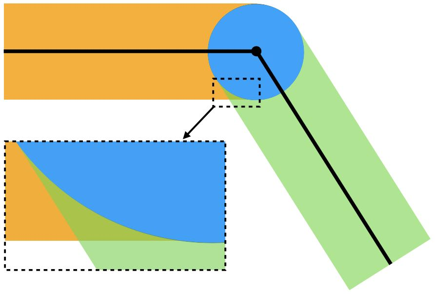

自接触
采用三角形离散时，区域的边界被近似为一条由若干边构成的折线。记这些边界边的集合为 ，则障碍势能变为：
这里， 是包含 的那些边的集合。完全忽略这些边是当前离散化下对 的一种具体选择。项 正是点-边距离 ，根据点与边的相对位置，它可以按点-点距离或点-直线距离来计算。
众所周知，障碍能量密度函数 已经是对阻止两个碰撞点相互穿透的非连续法向接触力的光滑近似。然而，在考虑离散曲面（此处为分段线性曲面）之间的自接触时，对点-边距离取 的非光滑算子是不可避免的。这种非光滑性仍然会给优化时间积分器带来挑战。
为了在分段线性边界的情形下仍得到光滑的障碍势能，我们先把 算子转换为 算子，因为能量密度函数 在整个区域内都是非增函数。由此得到：
接下来，我们需要对 算子做光滑近似。一个直接的选择是使用光滑 max 函数，例如 -范数函数：
其中 充分大。然而，指数 会把多个输入耦合在一起，增大模板尺寸并使海森矩阵的稀疏性变差，从而使仿真的计算开销更高。
幸运的是，由于 具有局部支撑——接触力只存在于距离小于 的情形——取 就足够了。当 相对较小时，只会在边界单元的交接处出现一些冗余的接触力（图 20.3.1）。

由于来自多个边界单元的 的重叠支撑清晰可辨，我们也可以把这些区域中冗余的障碍势能减去，详见 [Li et al. 2023]。在本书中，我们保持简单：取 使用 -范数形式，也就是直接求和：
在三角形离散下近似该积分，并取每条边界边的端点作为求积点，得到完全离散的形式：
与固体-障碍物接触的情形类似， 可以通过对整个接触势能关于节点自由度（DOFs）求导得到。